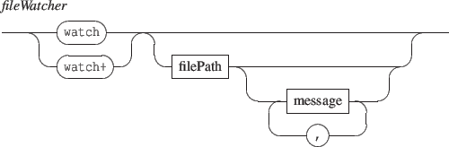

A FAUST processor accepts float values as input, which are taken as interleaved data.
From composition viewpoint, a FAUST processor is a parallel signal which dimension is the number of output channels.
Thus, a FAUST processor can be used like any parallel signal. However, the signal identifier defined in 13.1.2 is extended to support adressing single components of parallel signal as follows:

where  selects the signal #n of a parallel signal. Note that indexes start at 0.